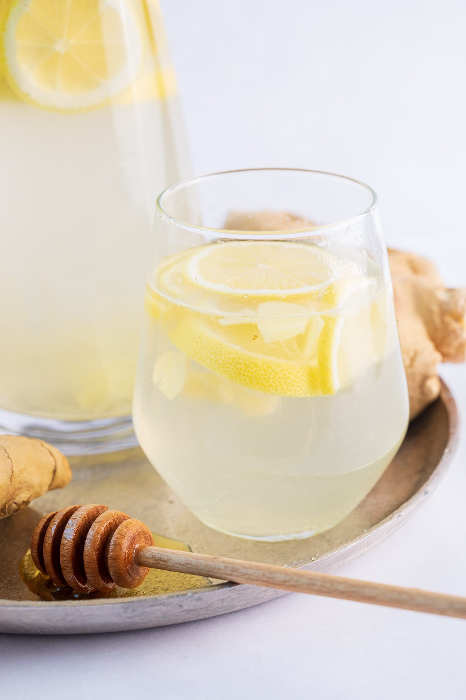

Lemon Ginger Water

Description
Ginger lemon water is my favorite remedy for colds or when I
have a sore throat or just not feeling well. This delicious
water is infused with fresh ginger, lemon juice, and sweetened
with raw honey. Although I drink it usually warm it’s also
good cold, with ice cubes.
Ingredients
Here’s what you need to make lemon ginger water:
- fresh lemon juice
- fresh ginger
- raw honey
- water
Steps
- Peel the ginger and cut it into very thin slices.
- Add the ginger to a cup and add 1 cup of boiling water. Let
steep for 20 minutes.
- Add honey and stir until dissolved.
- Add the ginger honey liquid into a large pitcher. Add lemon
juice and the remaining 2 1/2 cups of warm water (just
water that is pleasantly warm to drink, I like to use 1 1/2
cups of tap water and 1 cup of almost boiling water to get
a good temperature). Stir to combine.
Visit for more